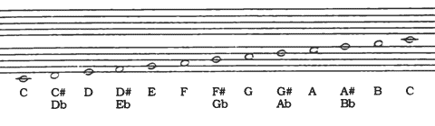
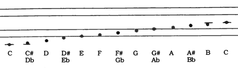
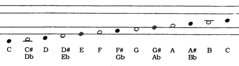

Music 101½
It's been said before by others, but I hadn't realised how insidious it is: When musicians talk about 'theory', they actually mean 'notation'. With reference to my previous whinging about music notation, I notice that the Music Notation Modernization Association are suggesting a number of revisions to make notation more useful and consistent. One of the more prominent suggestions is a change to the use of staves to make them compatible with the octave-offset principle I mentioned earlier, thus making the appearance of notes consistent across all staves, and making the use of clefs of any kind redundant.
The above idea especially comes into its own when combined with their other proposals:
Chromatic staves to indicate intervals in a proportional manner (rather than the current bonkers '♯' and '♭' notation)

Twinline staves, which only require two horizontal lines, rather than the conventional five, provides a significant increase in readability, in keeping with Tufte's principle of maximising data-ink ratio.

Note color or shape used to discriminate pitch, rather than the current quirky use of partially indicating note length. This is perhaps my favourite, as it massively increases the ease of rapidly identifying notes on sight. Since note colour is currently used to distinguish between a minim and a crotchet, then some other way of making them distinct would have to be found. A unique flag on the note stem would seem to suffice, and would be more in keeping with the other note duration symbology.

After what looks like years of painstaking brainstorming, research, focus testing and refinement, the only thing left for the MNMA to do is to decide on one single notation that unambiguously combines all the above ideas, and promote its use with the aim of gradually supplanting conventional notation. Unfortunately, this seems to be something they have singularly failed to do. By failing to adopt and recommend a single notation, they seem to be ensuring that none of their ideas will ever gain any traction.
Comments
Comments powered by Disqus